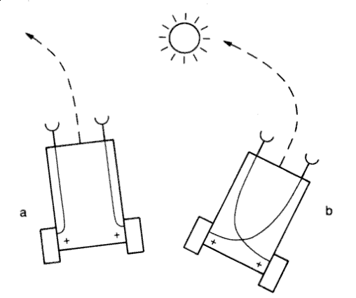

Robotic Arts Intro Fall 2019 (IA277.01)
- Instructor: Lucas Yasunaga Haroldsen (lharoldsen@mica.edu)
- Class Site: yasunaga.work/raif19
- syllabus: syllabus.pdf
- Resources: links.html
- Office hours: Tuesday 1 - 4pm
11/8: [work and planning day]
Final project : Idea drawing and planning
Today, I will be meeting with each of you individually throughout the class time to talk about your final project.
We will discuss:
- ideas and drawings of your project
- inspirations
- a general schedule of progression
- materials and supplies for your project
- potential difficulties of your project
- branches of ideas
Simple Brian

Valentino Braitenberg VEHICLES - Experiments in Synthetic Psychology
Jakob von Uexküll A Foray into the Worlds of Animals and Humans: with A Theory of Meaning
Arduino Review
Remember these?
- Basic Component
- Transistor Circuits
- Solar Creatures
- Digital Input and Output
- variables
- if else --video
- Analog Input, Serial Print, Threshold --video
- Analog output and tone()
Range / Distance / Proximity sensors
Library for HC-SR04 written by Sam Sheffield
How to install a library
Structural complexity
- How to merge or combine code
- Copy one sketch to another sketch or create new sketch
- Resolve any duplicating functions or global variables
- (Functions: void loop(), void setup()
- Variables: int, float)
- Resolve any duplicating pin use
- Delete any duplicate part that is doing the same thing
- Comment your code!
- Write out what you want your code to do
- Optional: For loop video
- Optional: using millis instead of delay (multitasking) Adafruit tutorial
- Optional: Random_behavior
Interfacing with AC circuits
Where to get stuff!
Remember to check out links at the resource page!
How to attach things to motors
Laser Cutting Resource
- MICA dfab laser cutting page
- Universal Manual
- How to make a file on Illustrator
interfacing
Kelly Dobson's Blendie
Random User by Monobo